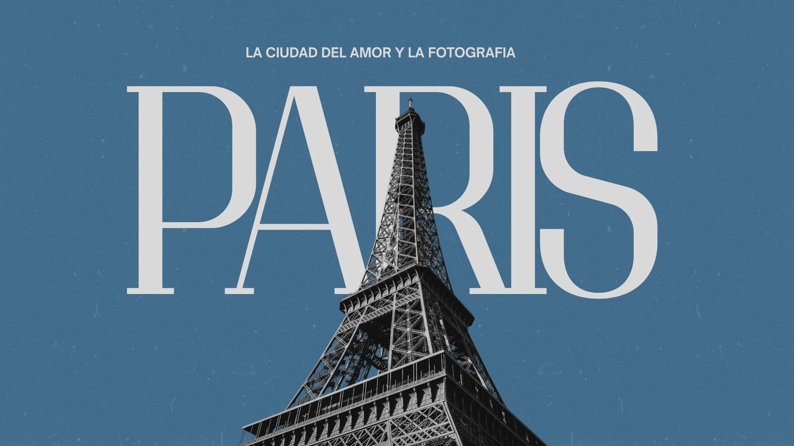

Historia
París es conocida como la "ciudad del amor" por su atmósfera romántica, historia artística del siglo XVIII, arquitectura pintoresca y su papel como escenario clásico de literatura y cine romántico. Rincones como la Torre Eiffel, Montmartre y el Sena, sumados a la cultura de cafés, fomentan el romance y la pasión.
Muchos poetas y escritores románticos se reunían en París en aquella época. Grandes nombres de la literatura de esta corriente son Victor Hugo y Alphonse de Lamartine, entre otros. En general, los artistas que desarrollaron sus obras en la ciudad contribuyeron a asociar a la misma la idea del romanticismo.
Además, no solo en numerosos libros se retrata la capital como un lugar que es símbolo del amor, sino también en el cine. Películas como Amélie hicieron que las visitas al barrio parisino de Montmartre aumentaran notablemente. Otros largometrajes muy populares cuyas historias transcurren en la ciudad son Al final de la escapada, Medianoche en París, Antes del atardecer y Moulin Rouge.